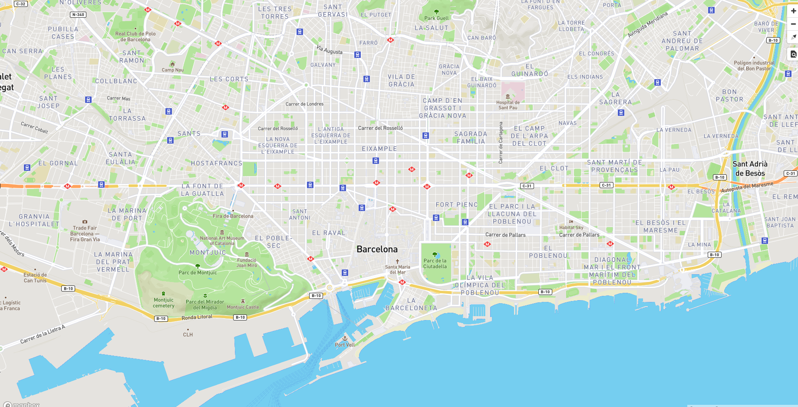
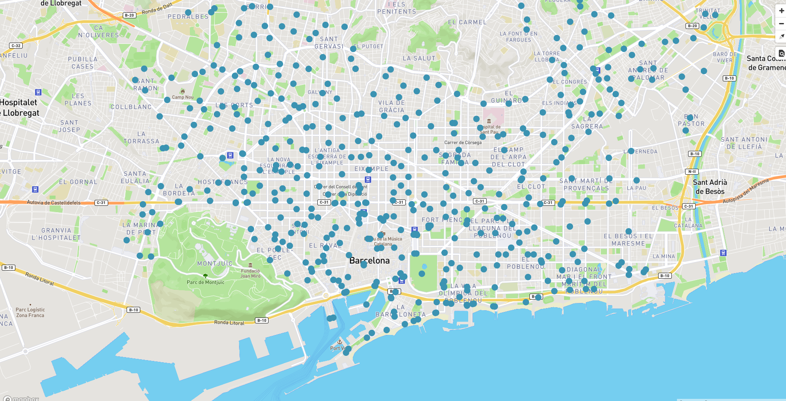
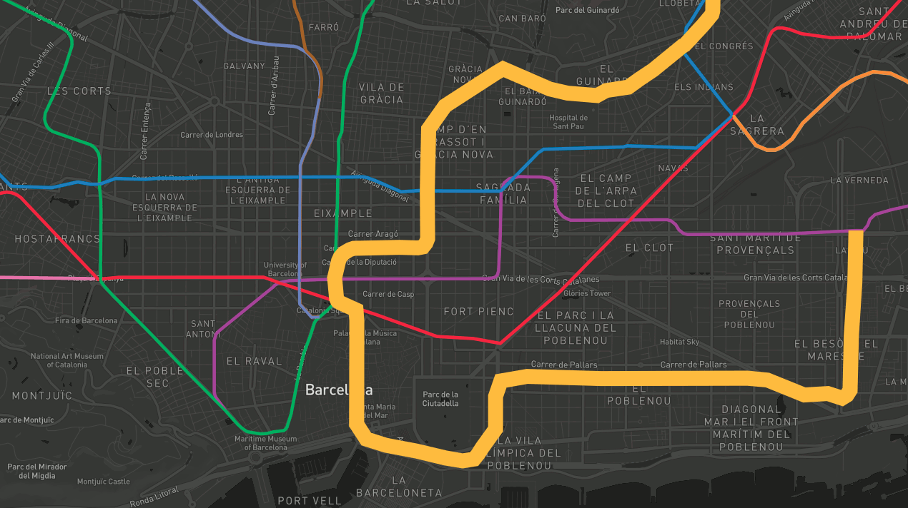
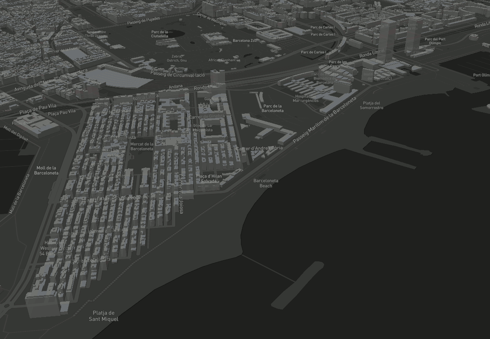

Documentacion y ejemplos
Todos los ejemplos
Hola mapa: ejemplos/01-hola-mapa.html

Inspector: ejemplos/02-inspector.html

Tileset: ejemplos/03-tileset.html

GeoJSON: ejemplos/04-geojson.html

Hover: ejemplos/05-hover.html

Buildings: ejemplos/06-buildings.html

Iconos: SVG, PNG y sprites para Mapbox GL
https://github.com/oscarfonts/TMB-Icons
Versión ampliada del taller
Versión completa del taller, de 4 horas, donde se entra mucho más en detalle en cómo crear y servir teselas vectoriales en nuestros propios servidores, sin depender de una cuenta de Mapbox: https://geoinquiets.github.io/taller-vt/
Documentación oficial
La web de referencia tiene 4 pestañas. Os estaréis moviendo entre las dos primeras, que contienen enlaces hacia los ejemplos de la tercera:
- API: https://www.mapbox.com/mapbox-gl-js/api/
- Style Spec: https://www.mapbox.com/mapbox-gl-js/style-spec
- Examples: https://www.mapbox.com/mapbox-gl-js/example/simple-map/
- Plugis: https://www.mapbox.com/mapbox-gl-js/plugins
Galería de ejemplos de aplicaciones de transporte público (no necesariamente usando vector tiles)
WebVMT linked to an embedded YouTube video (Viaje en tren Londres - Brighton) http://webvmt.org/demos/youtube
Trenes en tiempo real Londres https://traintimes.org.uk/map/tube/schematic/
Exemple de consulta de tots els serveis de bicicletes compartides arreu del món, inclou Barcelona (va passar per Geoinquiets) http://bikes.oobrien.com/barcelona/#zoom=13&lon=2.1664&lat=41.4039
Combinar el mapa de les estacions de Bicing amb el plugin Isocrones de Leaflet per si en 30 minuts et dona temps de pedalar d'estació origen a estació destí https://github.com/traffordDataLab/leaflet.reachability